T-01
Logo & Brand Identity
날개(Wing)와 말하기(Speaking)를 하나의 워드마크로 엮었습니다. ‘Speak’ 위로 펼쳐진 세 겹의 날개가 W의 첫 획이 되어, 말하는 순간 날아오르는 학생을 그립니다. 대표 로고인 윙스피킹 강남 어학원을 기준으로 락업과 색, 적용 규칙을 하나의 가이드로 정리했고, 2호점 유학 센터는 같은 골격에 브라운과 오렌지를 입혀 서브 브랜드로 확장했습니다.
01 PRIMARY LOGO

02 CONSTRUCTION
03 LOCKUP
- HORIZONTAL가로형 · 웹 헤더 · 간판

- STACKED세로형 · SNS · 인쇄

- REVERSE반전 · 어두운 바탕

04 COLOR CODE
- PRIMARY윙 네이비워드마크 · 대표 바탕
- HEX
- #031465
- RGB
- 3 20 101
- CMYK
- 97 80 0 60
- SECONDARY스피크 블루Speak · 강조
- HEX
- #3A64C2
- RGB
- 58 100 194
- CMYK
- 70 48 0 24
- WING윙 스카이날개 첫 획
- HEX
- #98B5E6
- RGB
- 152 181 230
- CMYK
- 34 21 0 10
- WING윙 미스트날개 둘째 획 · 바탕
- HEX
- #DAE7EE
- RGB
- 218 231 238
- CMYK
- 8 3 0 7
- SUB · 유학 센터센터 브라운유학 센터 바탕
- HEX
- #402D07
- RGB
- 64 45 7
- CMYK
- 0 30 89 75
- SUB · 유학 센터센터 오렌지유학 센터 날개 · 강조
- HEX
- #F3993A
- RGB
- 243 153 58
- CMYK
- 0 37 76 5
05 APPLICATION
- WEB BANNER링크 공유 이미지 · 1200×630

- PROFILESNS 프로필